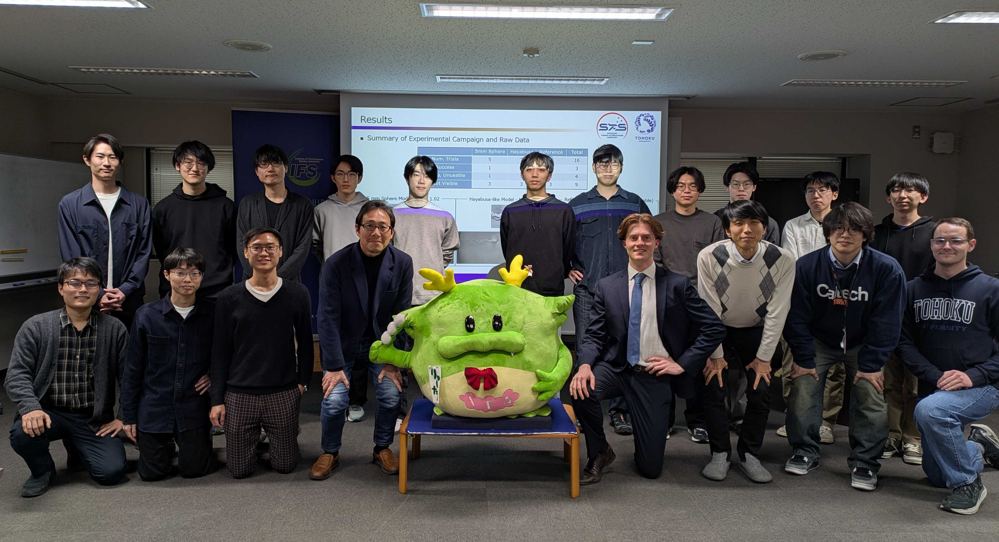

Transonic Free-Flight Experiment for the Dynamic Behaviour of a Next-Generation Deep-Space Sample Return Capsule
Overview
Re-entry capsules experience a dangerous dynamic instability (uncontrolled pitching oscillation) as they pass through the transonic regime. This is a safety-critical phenomenon: it reduces landing prediction accuracy and can cause parachute deployment failure. The Japan Aerospace Exploration Agency (JAXA)'s next-generation deep-space sample return capsule (DS-SRC), designed to survive re-entry at 16 km/s from interplanetary space, requires a new thin-walled aeroshell design whose transonic flight behaviour had never been experimentally characterised at a small enough length scale to observe a full period of this phenomena.
Working independently at Tohoku University's Spacecraft Thermal & Fluids Systems Laboratory, I designed and led a ballistic range experimental campaign to study this instability in free-flight for the first time. The project ran from initial literature review through model design, manufacturing, experimental campaign execution, post-processing, and a final seminar presentation, being awarded the highest possible grade for this research.
Key Contributions
- Designed and manufactured two unique precision brass capsule models: a Hayabusa-like deep-space sample-return capsule and a novel flat-back version of the next-generation aeroshell concept, at 4.8 mm diameter for use in a supersonic ballistic range
- Developed a creative geometric compromise for the aeroshell model: the exact thin-walled design was unmanufacturable at the required scale, so the rear geometry was filled and flattened to preserve the dominant forebody shape while enabling manufacture, a model type never previously used in the ballistic range
- Planned and led 16 ballistic range shots over two weeks at 130,000 fps using high-speed Schlieren photography, with direct responsibility for driving nitrogen pressure settings and real-time experimental parameter decisions
- Hand-manufactured sabots for each shot and iterated on high-speed camera settings: balancing frame rate, resolution, exposure time, and crop window, to capture the model within the 27 cm observation window at Mach 1.01
- Applied image processing and Spectral Proper Orthogonal Decomposition (SPOD) in MATLAB to the resulting flow field time series to identify the dominant instability modes and their Strouhal numbers
- Identified back pressure accumulation as the mechanism driving the pitching oscillation, consistent with literature, and established the first experimental proof of concept for characterising JAXA's next-generation capsule design using this method
Results
3 usable results from 16 shots. SPOD analysis confirmed the dynamic instability mode at St ≈ O(0.01), with vortex shedding identified at 0.13 < St < 0.23. Back pressure accumulation was identified as the primary driver of pitching oscillation. The reference DS-SRC model was successfully captured in free-flight, forming a proof of concept and experimental foundation for future investigation into JAXA's proposed next-generation capsule.
Final Presentation
A special thanks to Professor Hiroki Nagai and those who helped me with the experiment making this whole experience possible. Below is the team at the Spacecraft Thermal & Fluids Systems Laboratory after my final presentation.

The slides below were presented at the Spacecraft Thermal & Fluids Systems Laboratory Seminar, Tohoku University, February 6, 2026.